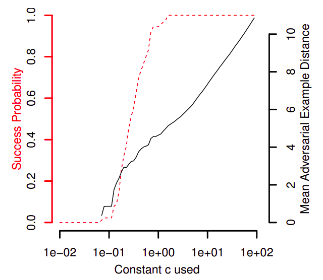
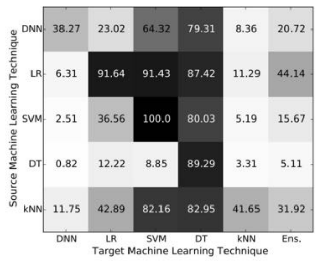
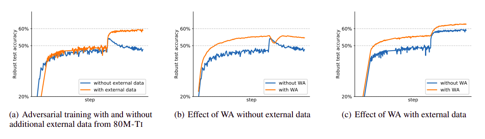
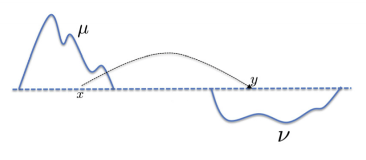

Adversarial machine learning
Standard ML
Samples are independent and identically distributed (i.i.d.)

Standard ML

Standard ML
Impressive results in the i.i.d. setting since ~2013

Caveat
Assumption of i.i.d. data can be violated when the model is deployed!
Unusual samples

"basketball"
Representation bias
Data sets are often amerocentric and eurocentric

Representation bias

Malicious adversaries

Spam filtering

Spam filtering

Other scenarios
Malware detection (e.g. malicious PDFs, MalConv)
Biometric security systems
Automatic content filtering (e.g. YouTube)
Adversarial examples
Type of evasion attack
What is the smallest modification to a "natural" sample that causes the model to make a mistake?
Adversarial examples
Typical formalization. An input $\tilde{x}$ is adversarial for a sample $(x, y)$ and model $f$ if
- $f(x) = y$;
- $f(\tilde{x}) \neq y$;
- $d(x, \tilde{x}) \leq \varepsilon$
Adversarial attacks
How to create adversarial examples
Threat model

Kerckhoffs's principle
A cryptosystem should be secure even if everything about the system, except the key, is public knowledge.
Threat model
Most attacks assume knowledge of the model and data set
L-BFGS attack
Minimize $c\|\delta\| + L(x + \delta, y, f)$
Straightforward but inefficient
L-BFGS attack

"ostrich" instead of "school bus"
Fast gradient sign attack
We wish to maximize $L(x + \delta, y, f)$.
Idea. First-order Taylor expansion: $$ L(x + \delta, y, f) \approx L(x, y, f) + \langle \nabla_xL(x, y, f), \delta \rangle. $$
Let $\delta = \varepsilon\mathrm{sign}(\nabla_xL(x, y, f))$. Then $\|\delta\|_\infty = \varepsilon$ and $$ L(x + \delta, y, f) \approx L(x, y, f) + \varepsilon\|\nabla_xL(x, y, f)\|_1. $$
Fast gradient sign attack
$$ \tilde{x} = x + \varepsilon\mathrm{sign}(\nabla_xL(x, y, f)). $$
Very fast
Requires access to the gradients of the loss
Fast gradient sign attack

PGD attack
Let $\tilde{x}_0 \gets x$ and iterate: $$ \tilde{x}_{t+1} \gets \Pi_S(\tilde{x}_t + \varepsilon\mathrm{sign}(\nabla_xL(x, y, f)) $$
Essentially multi-step FGSM with projection
Very strong but slow (requiring high number of iterations)
Carlini-Wagner attack
General objective: $$ \min_\delta~d(x, x + \delta) + cg(x + \delta). $$
Specific choice for $g$: $$ g(x^\prime) = \max\left\{ \max_{i \neq t}~Z_i(x^\prime) - Z_t(x^\prime) - \beta, 0 \right\}. $$
Very powerful but very slow
Carlini-Wagner attack
Transfer attacks
Attack one model and test generated adversarials on another
Useful if target model is unknown
Very effective!
Transfer attacks

Image transformations

Adversarial examples IRL

"speed limit" instead of "stop sign"
Adversarial examples IRL
Adversarial examples IRL
Adversarial examples IRL

Adversarial examples for text

Adversarial examples for text

Adversarial examples for audio

Adversarial examples for audio
ExamplesMisleading interpretability techniques

Beyond simple perturbations

Beyond simple perturbations
Simple additive norm-bounded perturbations are a toy problem!
Some work has used generative models for more sophisticated attacks, such as DeepAugment
Beyond simple perturbations

Adversarial defenses
How to cope with adversarial examples
Adversarial defenses
- Denoising. Remove the adversarial noise from the samples.
- Detection. Detect the presence of adversarial noise.
- Hardening. Make the model immune to adversarial noise.
Adversarial defenses
- Certified. Mathematical proof that no $\delta$ with $\|\delta\| \leq \varepsilon$ will fool the model.
- Uncertified. No such guarantees; only empirical evidence.
Certified defenses are preferred, but more difficult to handle
Adversarial training
Just train on the adversarial examples as well
Uncertified but simple
Effectiveness heavily depends on attack
Robust optimization
Standard ML: $$ \min_\theta~\mathbb{E}\left[ L(X, Y, \theta) \right]. $$
Robust ML: $$ \min_\theta~\mathbb{E}\left[ \max_\Delta L(X + \Delta, Y, \theta) \right]. $$
Robust optimization
Practical implementation. For each minibatch,
- Inner maximization. Use adversarial attacks to construct adversarial training samples.
- Outer minimization. Update model parameters using these worst-case samples.
Can be certified sometimes (Sinha et al. (2017), Zhang et al. (2019))
Robust overfitting

Randomized smoothing
$$\begin{aligned} g(x) &= \mathrm{argmax}_y~\Pr[f(x + \eta) = y]\\ &\mbox{ where }\eta \sim \mathcal{N}(0, \sigma^2I). \end{aligned}$$Certified robustness radius: $$ R = \frac{\sigma}{2}\left( \Phi^{-1}(p_A) - \Phi^{-1}(p_B) \right). $$
Randomized smoothing

Game theory
Stackelberg game. Attacker $A$ and defender $D$ solve intertwined optimization problems: $$\begin{aligned} R_A(u) &= \mathrm{argmax}_{v \in V}~J_A(u, v),\\ R_D(v) &= \mathrm{argmax}_{u \in U}~J_D(u, v). \end{aligned}$$
Other tricks
Many small tricks can add up to significantly higher robustness!
Rebuffi et al. (2021): model weight averaging + clever data augmentations
Other tricks
Arms race

Arms race
Researchers have tried a lot of approaches for defense
Almost every defense proposed thus far has been broken (Tramer et al. (2020))
- ... by more powerful attacks
- ... due to researchers' own oversights (e.g. gradient masking)
Schneier's Law
Any person can invent a security system so clever that they themselves can't think of how to break it.
Theoretical results
Fundamental theoretical understanding of adversarial examples
No free lunch
No non-trivial concept class can be robustly learned in the distribution-free setting against an adversary who can perturb a single input bit.
Sample complexity
Robust learning, when possible, can require exponentially more samples than standard learning
Optimal transport
Optimal transport
Probability measures $\mu$ and $\nu$ over a metric space $(X,d)$.
Cost function: $$ c_\varepsilon(x,y) = \mathcal{I}[d(x,y) > 2\varepsilon] $$
Optimal transport cost: $$ D_\varepsilon(\mu, \nu) = \inf_{\pi \in \Pi(\mu, \nu)}~\mathbb{E}_{(x,x^\prime) \sim \pi}[c_\varepsilon(x, x^\prime)]. $$
Optimal transport
Theorem (Pydi & Jog (2020)). The minimal robust risk is $$ \frac{1}{2}\left(1 - D_\varepsilon(p_0, p_1)\right). $$
Robustness vs accuracy
Robust accuracy can be at odds with standard accuracy
Robustness vs accuracy
$$ y = \begin{cases} +1 & \text{wp 50%,}\\ -1 & \text{wp 50%.} \end{cases} $$
$$ x_1 = \begin{cases} +y & \text{wp }p,\\ -y & \text{wp }1-p. \end{cases} $$
$x_2, \dots, x_{d+1} \sim \mathcal{N}(\eta y, 1)$
Robustness vs accuracy
Basically, the label $y$ is $+1$ or $-1$ uniformly at random, $x_1$ is moderately correlated with $y$ (via $p$) and $x_2, \dots, x_{d+1}$ are weakly correlated with $y$ (for large $\eta$).
Robustness vs accuracy
Standard classification. Easy: $$ f(x) = \mathrm{sign}(\langle w, x \rangle) $$ where $$ w = \left(0, \frac{1}{d}, \dots, \frac{1}{d} \right). $$
Arbitrarily accurate for $d \to \infty$
Robustness vs accuracy
Theorem (Tsipras et al. (2018)). Any classifier that attains at least $1-\delta$ standard accuracy has robust accuracy at most $\frac{p}{1-p}\delta$ against an $\ell_\infty$-bounded adversary with $\varepsilon \geq 2\eta$.
Corollary. For $p < 1$, 100% standard accuracy implies 0% robust accuracy!
Robustness vs accuracy
Yang et al. (2020): classes from real-world data sets are well-separated, so robustness should be achievable
Robustness vs accuracy

Robustness vs accuracy
Robustness to adversarial perturbations often hurts robustness to other, more natural corruptions
This may be related to the frequency of the noise signals (Yin et al. (2019))
Brittle features
- $\mathcal{D}$: standard training set
- $\mathcal{D}_R$: "robust" training set
- $\mathcal{D}_{NR}$: "non-robust" training set
Brittle features

Brittle features
Labels of $\mathcal{D}_{NR}$ look wrong
Samples of $\mathcal{D}_R$ look wrong
Training on $\mathcal{D}$ yields the same results as training on $\mathcal{D}_{NR}$!
Training on $\mathcal{D}_R$ yields robust, accurate model!
Brittle features
Hypothesis (Ilyas et al. (2019)). Data sets contain brittle features which generalize to the test set but do not withstand adversarial attacks.
Standard models include these brittle features because they maximize test accuracy at all costs
Invariance vs sensitivity

Don't panic!

Don't panic!
Gilmer et al. (2018): adversarial perturbations are rarely an actual security concern
More of a generalization issue than a security problem...
Conclusions
Conclusions
Adversarial ML is fundamentally interdisciplinary
ML + cybersecurity + game theory + ...
Rarely a real security concern, but calls generalization ability into question
Conclusions
Small additive perturbations are a toy problem
Generalizing beyond this toy problem is hard
The toy problem itself is already very hard!
Too much focus on the image domain
Conclusions
We have some deep theoretical results, but practical robustness is still lacking